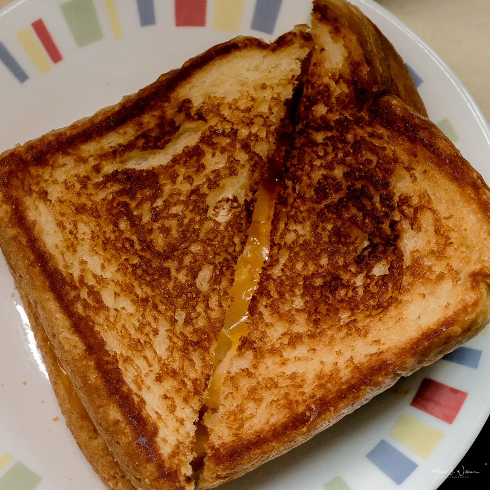

Grilled Cheese Recipe!

Learn how to make a simple Grilled Cheese Sandwich.
Ingredients
Instructions
- Turn stove to medium heat.
- Lay out two slices of bread.
- Spread margarine on one side of each bread.
- Place one slice of bread margarine side down on the stove.
- Put the slice of cheese on top.
-
Place the second slice of bread on top of the cheese, margarine side up.
- Let bread rest on stove until golden brown.
- Flip the sandwich and do the same for the second side.
-
Then flip and compress bread for maximum cheesiness on both sides until
your liking.